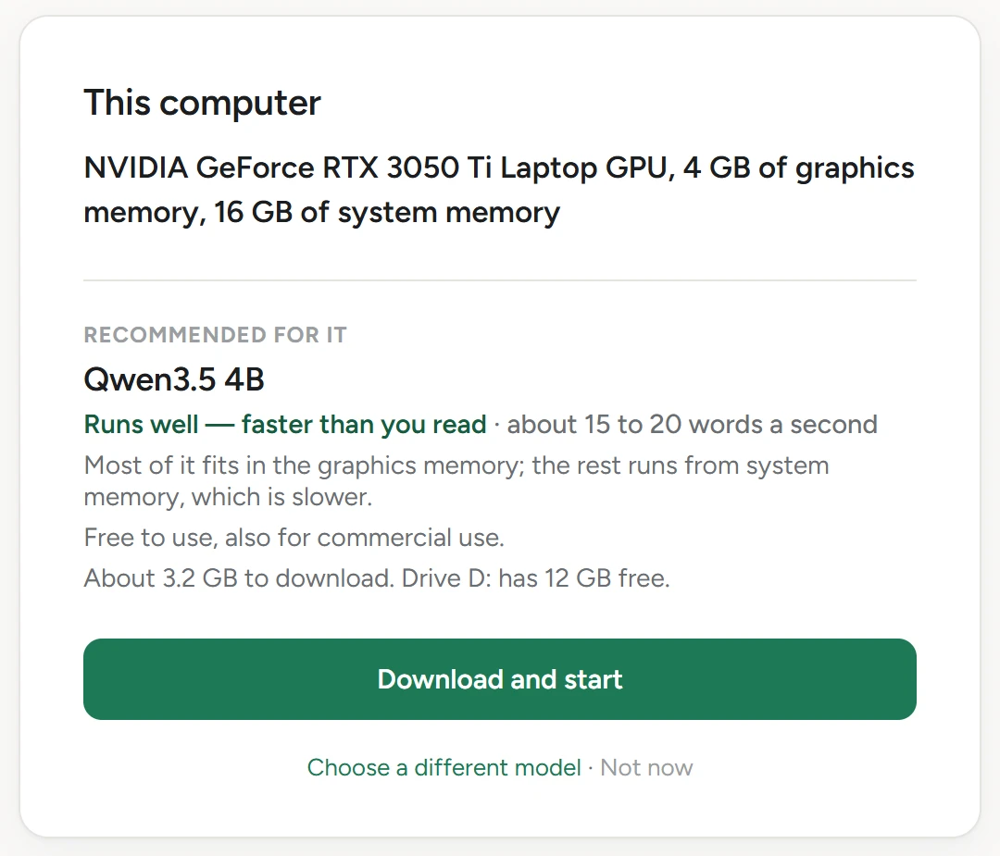

![Первый экран localSpace 0.2.0-preview.1 на английском. В разделе «Этот компьютер»: NVIDIA GeForce RTX 3050 Ti Laptop GPU, 4 ГБ видеопамяти, 16 ГБ оперативной памяти. Рекомендовано: Qwen3.5 4B, работает хорошо, быстрее, чем вы читаете, около 15–20 слов в секунду. Большая часть модели помещается в видеопамять, остальное работает из оперативной памяти, а это медленнее. Бесплатно, в том числе для коммерческого использования. Скачать около 3,2 ГБ; на диске D: свободно 12 ГБ. Кнопка «Скачать и начать».](../../shots/first-run-0.2.webp)
Сначала оно смотрит
Сначала оно читает ваш компьютер.
Видеокарту, её память и оперативную память — прямо на компьютере, ещё до загрузки. Ничего не отправляется.
- Видеокарта
- NVIDIA GeForce RTX 3050 Ti Laptop GPU
- Видеопамять
- 4 ГБ
- Оперативная память
- 16 ГБ
Так предварительная версия прочитала наш тестовый ноутбук 21 октября 2026 года.
